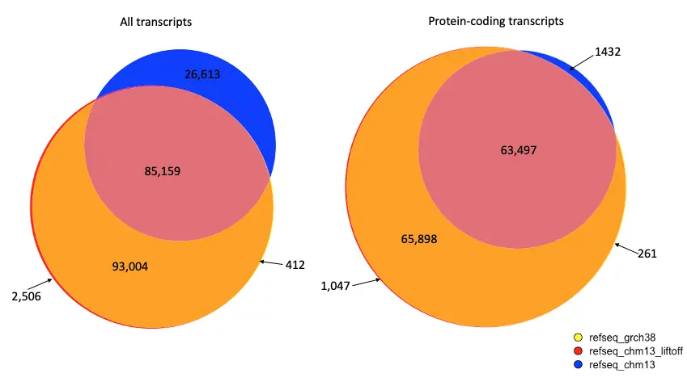

T2T consortium annotation of the CHM13 genome
The T2T consortium's annotation of the CHM13 genome, as published in the original paper and updated since, is available at the T2T consortium's assembly and annotation site, here. A direct link to the current annotation file is here. As of September 2025, the latest annotation is version 5.3, which fixes many small issues in earlier releases, including mapping errors caused by errors in the GRCh38 annotation, off-by-1 errors in some splice sites, special character issues in the original RefSeq annotation, and more.
This annotation was originally created by using the Liftoff program [1]; (v1.6.3, with options -copies -sc 0.95 -polish -exclude_partial -chroms) to map all human genes in the RefSeq [2] annotation release 110 from the GRCh38.p14 genome to the CHM13v2.0 genome, a complete, gap-free human genome published by the Telomere-to-Telomere (T2T) consortium [3]. Later releases have involved custom programs that fixed systematic mapping errors as well as manual curation of some genes.
The initial Liftoff process, described in the 2022 human genome paper [3], can be summarized as follows. Of the 58,700 genes (19,871 protein coding) and 179,372 transcripts (130,361 protein coding) annotated on the main chromosomes and unplaced contigs in GRCh38, we successfully lifted over 58,272 genes (19,767 protein coding) and 178,688 transcripts (130,426 protein coding). We also used the "-copies" option in Liftoff to identify additional gene copies in CHM13, using a minimum sequence identity threshold of 95% at the DNA level. With this threshold, we found 2,393 additional gene copies (239 protein coding). Finally, we added the ribosomal DNA (rDNA) annotations on the acrocentric chromosomes from the CHM13v2.0 annotation, which were created using the Comparative Annotation Toolkit (CAT) [4]; and Liftoff. These steps resulted in a total gene count of 61,322 (20,006 protein coding) and a total transcript count of 181,715 (130,426 protein coding). The table below shows the number of genes of each biotype in GRCh38 and CHM13 from the 2022 annotation. These numbers have changed in subsequent updates; e.g., the v5.3 annotation has 20,064 protein-coding genes and 61,342 total genes. See the release notes for more details on each version.
| Gene biotype | Number of genes in GRCh38 | Number of genes on CHM13 (v5.1) |
|---|---|---|
| protein coding | 19871 | 20006 |
| lncRNA | 17793 | 18389 |
| pseudogene | 15357 | 16030 |
| miRNA | 1914 | 2047 |
| transcribed pseudogene | 1221 | 1262 |
| snoRNA | 1195 | 1188 |
| tRNA | 431 | 522 |
| V segment | 239 | 245 |
| V segment pseudogene | 189 | 209 |
| snRNA | 153 | 192 |
| J segment | 98 | 79 |
| ncRNA | 51 | 49 |
| rRNA | 38 | 325 |
| misc RNA | 36 | 37 |
| D segment | 32 | 0 |
| C region | 21 | 23 |
| antisense RNA | 19 | 19 |
| other | 14 | 13 |
| J segment pseudogene | 7 | 6 |
| C region pseudogene | 5 | 5 |
| Y RNA | 4 | 7 |
| vault RNA | 4 | 4 |
| scRNA | 4 | 4 |
| telomerase RNA | 1 | 1 |
| RNase P RNA | 1 | 1 |
| RNase MRP RNA | 1 | 1 |
| ncRNA pseudogene | 1 | 1 |
| Total | 58700 | 60655 |
A comparison of the genes (from v5.1) using gene IDs to match annotations is shown in the figure below. Genes were compared between RefSeq v110 on GRCh38, the Liftoff version of RefSeq on CHM13, and the NCBI version of RefSeq on CHM13. The NCBI version, shown in blue, was produced using the Gnomon pipeline, which only mapped approximately half of the protein coding genes.
